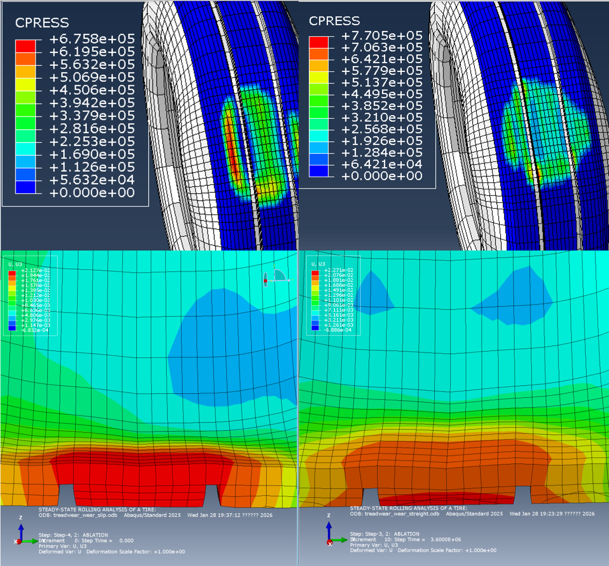
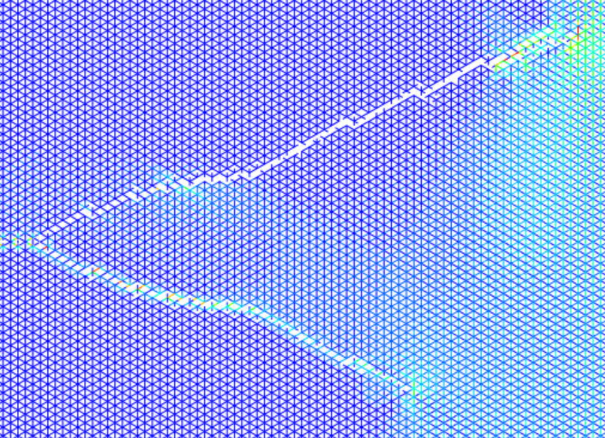
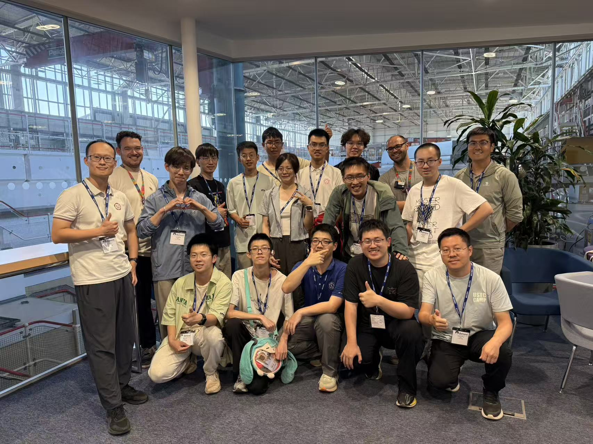
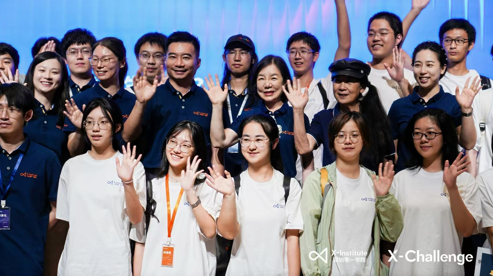
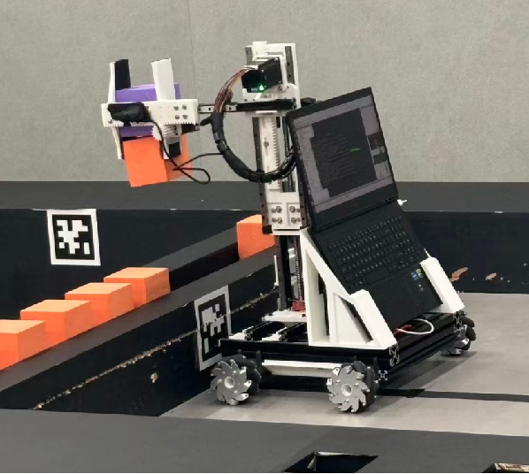
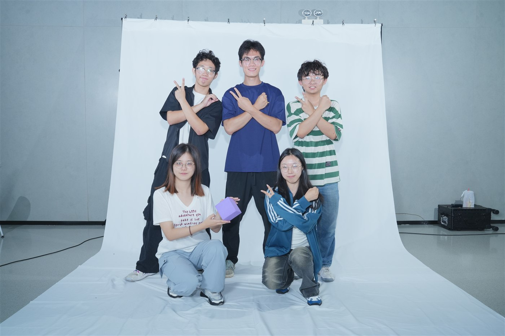

Bi-material Architecture
Designing triangular lattices with controlled soft-hard modulus contrast, strut dimensions, phase arrangement, and relative density.
MECHANICS · SIMULATION · EXPERIMENT
Exploring how computation, experiments, and intelligent design can make complex structures lighter, tougher, and more reliable.
I am an undergraduate in Theoretical and Applied Mechanics at the University of Science and Technology of China, expected to graduate in 2028. My work connects nonlinear finite element analysis with physical experiments.
I am particularly interested in mechanics simulation, fatigue and fracture, architected materials, and algorithms that turn reliable models into better engineering structures.
My undergraduate innovation project studies how material contrast and lattice geometry govern fatigue damage. Move the pointer to perturb the structure.
Designing triangular lattices with controlled soft-hard modulus contrast, strut dimensions, phase arrangement, and relative density.
Combining multi-material 3D printing, cyclic fatigue tests, and simulation to measure S-N response and trace crack initiation, deflection, branching, and coalescence.
Building a fatigue-fracture database from experimental and simulation data to predict lifetime and optimize lightweight, fracture-resistant lattice designs.
A nonlinear finite element workflow for resolving rolling contact, deformation, wear, and structural performance across tire operating conditions.
Working with Prof. Hengan Wu's group, I studied nonlinear tire and contact mechanics and contributed to adaptive meshing and parallel solution methods for full-condition finite element simulation, wear analysis, and structural optimization.
National Third Prize · 19th Challenge Cup

In Prof. Yong Ni's group, I combine multi-material 3D printing, cyclic fatigue tests, finite element analysis, and machine learning to investigate crack propagation and seek lattice designs that are lightweight, tough, and fatigue-resistant.
National Undergraduate Innovation Program

Two consecutive National Scholarships, awards across mechanics, mathematics, and innovation competitions, and hands-on student leadership have shaped how I approach both research and teamwork.
Received the National Scholarship for a second consecutive year and won the Special Prize in the Anhui Provincial Mechanics Competition.
National Scholarship and Outstanding Student Scholarship, Gold Award; National Third Prize in the 19th Challenge Cup, Third Prize in the Anhui division of the Chinese Mathematics Competition, and an Innovation Award at the National Mechanics + X Innovation Practice Symposium.
President of the School of Engineering Student Union (2026), Vice Minister of the University Student Union Rights Department (2026), and former Minister of the Engineering School Publicity Department (2025). Organized freshman welcome events, an energy-saving innovation competition awards ceremony, and student community activities while coordinating publicity, photography, and student feedback.




Python · C · MATLAB · Mathematica
Abaqus · Nonlinear FEA · Contact mechanics
Multi-material 3D printing · Fatigue testing
CET-6 645 · CET-4 650
LET'S WORK ON A HARD PROBLEM
I welcome conversations about computational mechanics, architected materials, fatigue and fracture, or research opportunities that bridge simulation and experiment.
chenyouxue@mail.ustc.edu.cn